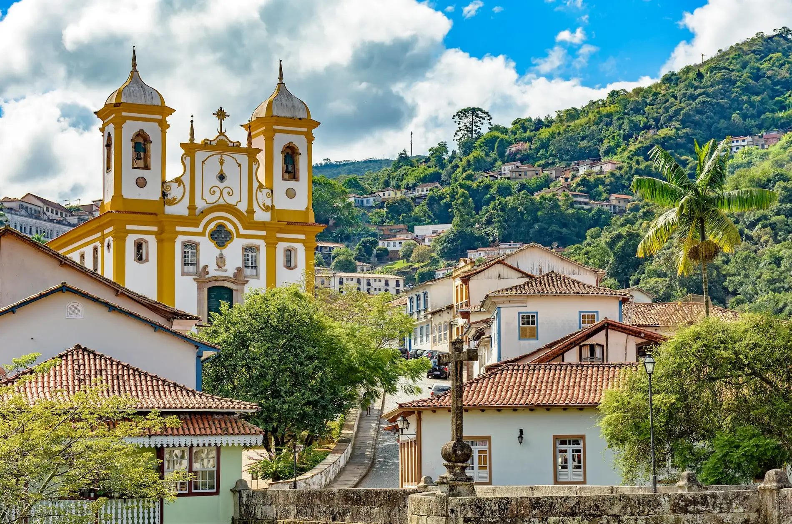
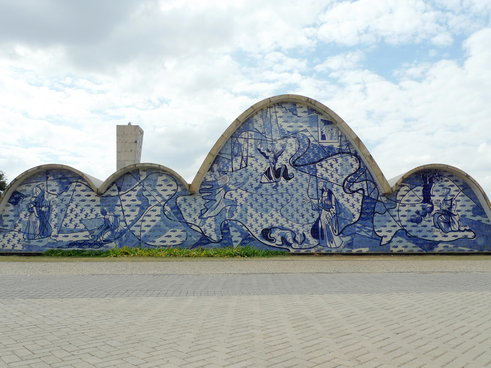
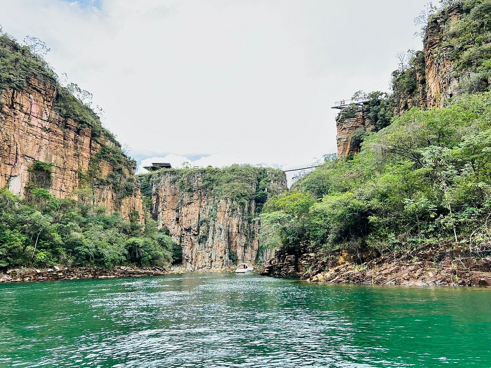

PARA OS AMANTES DE HISTÓRIA
Descubra 3 destinos imperdíveis em Minas Gerais
Minas Gerais é um estado fascinante, rico em história, cultura e belezas naturais exuberantes. Para ajudar você a planejar sua próxima viagem ou conhecer mais sobre a região, selecionei três dos pontos turísticos mais emblemáticos e visitados do estado:

1. Centro Histórico de Ouro Preto
Uma das cidades históricas mais famosas do Brasil, Ouro Preto parece parada no tempo. O seu centro histórico é famoso pelas ladeiras de paralelepípedo, pelos casarões coloniais preservados e pelas imponentes igrejas barrocas com esculturas icônicas de Aleijadinho.
Bom para:
- História
- Culinária

2. Conjunto Moderno da Pampulha (Belo Horizonte)
Localizado na capital, o Conjunto da Pampulha é um marco da arquitetura moderna mundial e reconhecido como Patrimônio Cultural da Humanidade pela UNESCO. Projetado por Oscar Niemeyer na década de 1940, o circuito ao redor da lagoa inclui a famosa Igreja de São Francisco de Assis (com os icônicos painéis de azulejos de Portinari), o Museu de Arte da Pampulha e a Casa do Baile.
Bom para:
- Passeios de bicicleta

3. Canyons de Capitólio (Lago de Furnas)
Conhecido como o "Mar de Minas", o Lago de Furnas em Capitólio é cercado por imensos paredões de pedra que chegam a passar de 20 metros de altura. O local atrai turistas do mundo inteiro para passeios de lancha e escuna, trilhas ecológicas e mergulhos em cachoeiras de águas cristalinas escondidas entre os desfiladeiros.
Bom para:
- Família
- Mergulhos
- Fotos